Visualizing density - II
Lecture 6
Warm up
Announcements
- Make sure to review the feedback on your HW 01 repo and close the issue once you’re done reiewing.
- Once you review, close the issue
- HW 02 won’t be graded for those who have open issues from the previously assigned homeework assignment.
Setup
Densities
Distributions and Motivating Example
There are many properties of a distribution of values
- Center: Mean, Median, Modes
- Spread: Variance, Range (Support), Interquartile range
- Shape: Skewness, Kurtosis, Quantiles
- Any statistic you can think of
Ultimately when analyzing data, the distribution is important to know how to proceed:
- Parametric tests
- Erratic Data
- Outliers
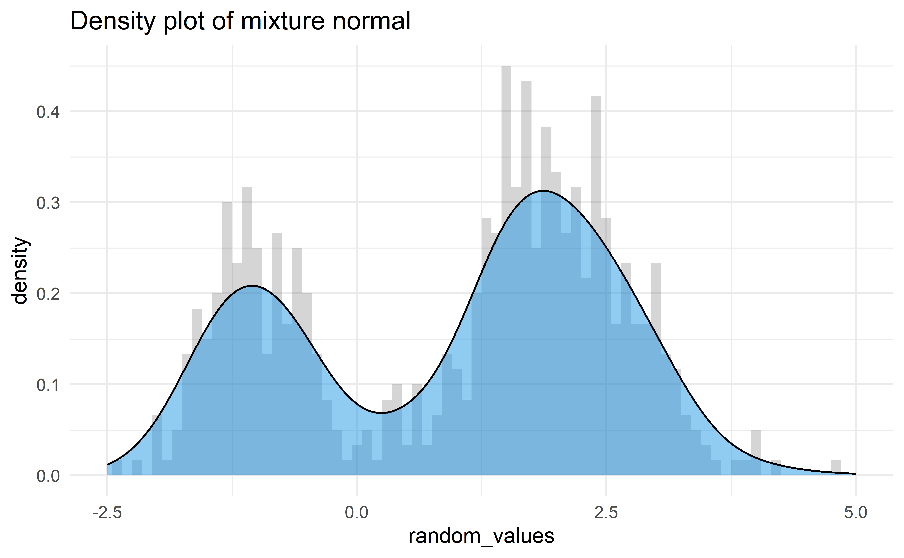
- Baseball! A home run in baseball occurs when a player hits a fair ball outside of the playing field.
- Baseball is a game with a long rich history, but home runs have always been an integral part of it. By examining the distribution of home runs year-by-year we may be able to see the effect of various rule changes or events.
Data
library(Lahman)
home_runs <- Batting |>
filter(
G >= 100 | # We want to see how many home runs players that played most of the season hit
(G >= 40 & yearID == 2020) | # COVID-shortened season
(G >= 70 & yearID == 1994), # Strike-shortened season
yearID > 1920, # Beginning of live-ball era
lgID %in% c("AL", "NL")
) # Most common leaguesOur dataset comes from the R package Lahman. Each row in the data frame is the hitting stats of a player for a given year. Today we will use the following columns:
| Variable | Description |
|---|---|
yearID |
The year for the statistics |
HR |
The number of home runs a player hit in a given year |
G |
Number of games played; there are 162 games in a baseball season (154 before 1961) |
In particular we are interested in the distribution of home runs per year!
Important notes from last time
Although density graphs are very useful and can display lots of information, they can be sensitive to bandwidth.
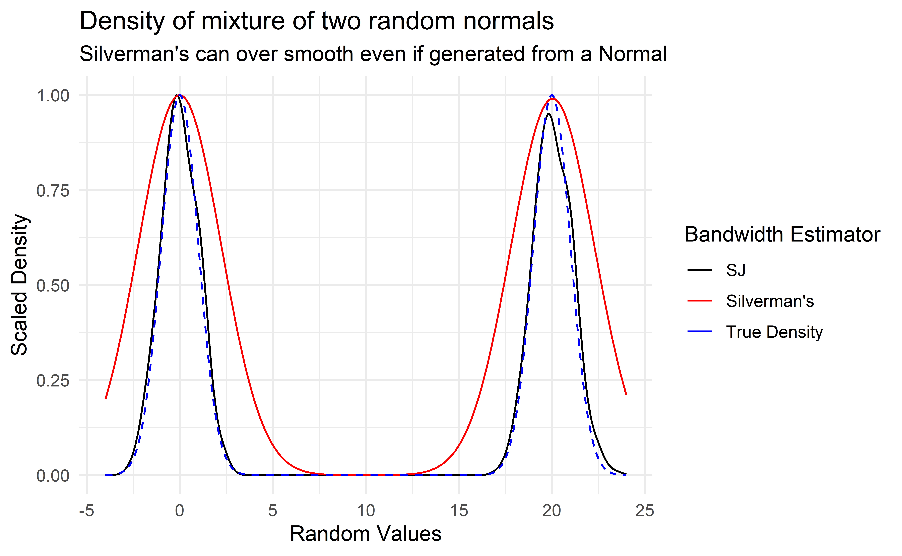
It was not clear how to properly determine if two distributions were significantly different.
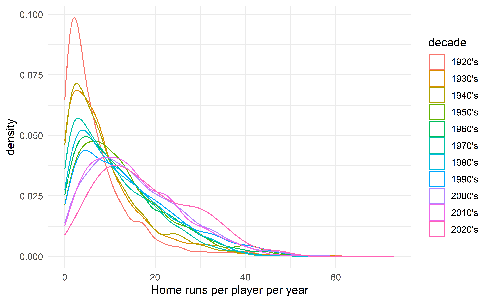
Cumulative Distribution Functions (CDF)
For a random variable \(X\), the CDF describes the probability that \(X\) is below a certain value:
- Between 0 and 1 (like all probabilities)
- Non-decreasing
- Derivative is the PDF, i.e. the larger the PDF the faster the CDF is increasing.
- Example: If \(X \sim \textsf{Normal}(0, 1)\)
\[ \begin{align*} F_X(x) & = P(X \leq x) \\ F_x(-\infty) & = 0 \\ F_x(-1) & = 0.1587 \\ F_x(0) & = 1/2 \\ F_x(1) & = 0.8413 \\ F_x(\infty) & = 1 \end{align*} \]
Empirical CDF (ECDF)
- The empirical CDF of data is the proportion of data below a certain value:
- Between 0 and 1 (like all probabilities)
- Non-decreasing
- Increases at every value of observed data (step function)
- Example:
X = c(0, 1, 2, 2, 3, 3.5, 4)
\[ \begin{align*} F_n(t) & = \frac{1}{n} \sum_{i=1}^n \begin{cases} 1 & x_i \leq t \\ 0 & \text{otherwise} \end{cases} \\ F_7(-1) & = 0 \\ F_7(0) & = 1/7 \\ F_7(2.5) & = 4/7 \\ F_7(4) & = 1 \\ F_7(5) & = 1 \end{align*} \]
Empirical CDFs in R
new_example_data <- c(
rnorm(n = 200, mean = -1, sd = 0.5),
rnorm(n = 400, mean = 2, sd = 0.75)
)
mix_ecdf <- ecdf(new_example_data)| Function Call | Probability less than value |
|---|---|
| mix_ecdf(-3) | 0.0000 |
| mix_ecdf(-1) | 0.1617 |
| mix_ecdf(0) | 0.3367 |
| mix_ecdf(2) | 0.6583 |
| mix_ecdf(5) | 1.0000 |
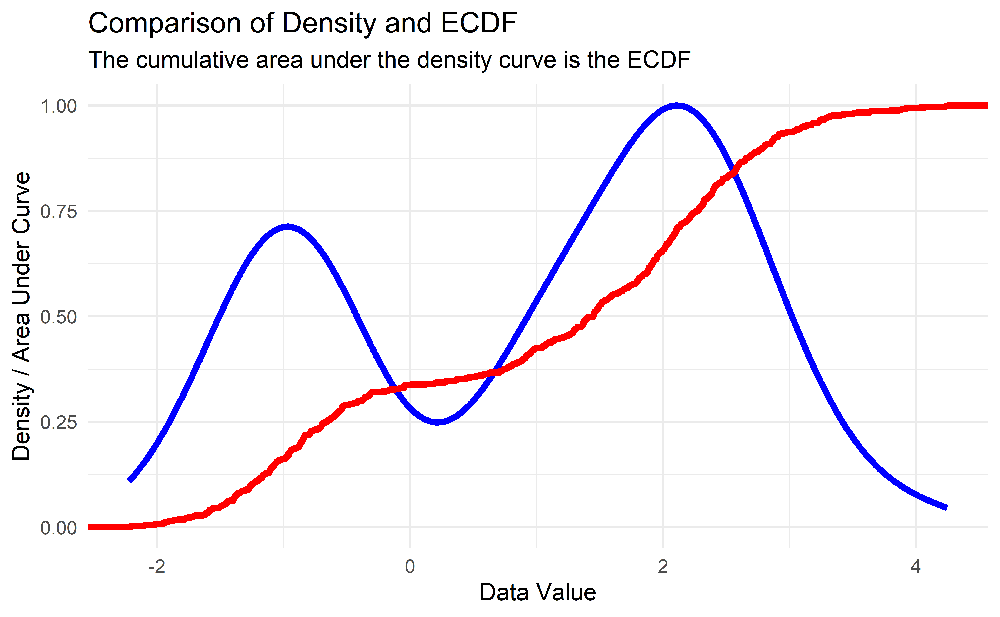
Kolmogorov-Smirnov Test (Two-sample)
- Theorem: If two random quantities have equal CDF’s they have the exact same distribution.
- The Kolmogorov-Smirnov Test finds the maximum difference between two empirical CDF’s and outputs a test statistic based on the sample sizes.
- The test is best used with continuous data as it is approximate in the case of discrete data, but it is good enough for our purposes.
- Conditions to perform the test (which we somewhat violate):
- Values must be i.i.d. within their respective distributions
- The two distributions being tested must be independent
Comparing Distributions 1
# Closest 4 years
HRearly2010s <- home_runs |>
filter(yearID %in% 2011:2014)
# Years up to COVID season
HRlate2010s <- home_runs |>
filter(yearID %in% 2016:2019)
ks.test(HRearly2010s$HR, HRlate2010s$HR)
Asymptotic two-sample Kolmogorov-Smirnov test
data: HRearly2010s$HR and HRlate2010s$HR
D = 0.16691, p-value = 6.463e-12
alternative hypothesis: two-sidedget_ks_df <- function(dat1, dat2) {
# Make ECDF of each set of data
ecdf1 <- ecdf(dat1)
ecdf2 <- ecdf(dat2)
# Calculate the absolute difference between the 2 ECDFs on the support
grid_points <- seq(0, max(c(dat1, dat2)), length.out=1000)
differences <- abs(ecdf1(grid_points) - ecdf2(grid_points))
# Get the KS statistic and where it occurs
ks_stat <- max(differences)
first_max_location <- grid_points[which.max(differences)]
# Return tibble to help with plotting
tibble(
x = first_max_location,
xend = first_max_location,
y = ecdf1(first_max_location),
yend = ecdf2(first_max_location)
)
}
ks_stat_2010s <- get_ks_df(HRearly2010s$HR, HRlate2010s$HR)
ggplot(rbind(HRearly2010s, HRlate2010s), aes(HR, color = factor(yearID < 2015))) +
stat_ecdf(geom = "step") +
geom_segment(
data = ks_stat_2010s,
aes(
x = x,
y = y,
xend = xend,
yend = yend
),
color = "black",
linetype = "dashed"
) +
labs(
x = "Homeruns per player per year",
y = "Empirical CDF",
title = "Empirical CDFs of player home runs per year in years 2011-2019 ",
subtitle = "Dashed line is the Kolmogorov-Smirnov Statistic"
) +
theme(legend.position = "bottom")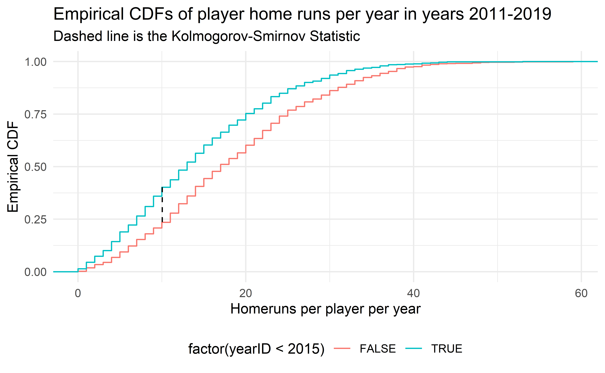
Major League Baseball was accused of replacing the standard baseballs with “juiced” baseballs (easier to hit home runs) secretly in the middle of 2015. Is there credence to this claim?
Comparing Distributions 2
HR2005 <- home_runs |>
filter(yearID == 2005)
HR2006 <- home_runs |>
filter(yearID == 2006)
ks.test(HR2005$HR, HR2006$HR)
Asymptotic two-sample Kolmogorov-Smirnov test
data: HR2005$HR and HR2006$HR
D = 0.073827, p-value = 0.503
alternative hypothesis: two-sidedks_stat_0506 <- get_ks_df(HR2005$HR, HR2006$HR)
ggplot(rbind(HR2005, HR2006), aes(HR, color = factor(yearID))) +
stat_ecdf(geom = "step") +
geom_segment(
data = ks_stat_0506,
aes(
x = x,
y = y,
xend = xend,
yend = yend
),
color = "black",
linetype = "dashed"
) +
labs(
x = "Homeruns per player per year",
y = "Empirical CDF",
title = "Empirical CDFs of player home runs per year in years 2005 and 2006 ",
subtitle = "Dashed line is the Kolmogorov-Smirnov Statistic",
color = "Year"
) +
theme(legend.position = "bottom")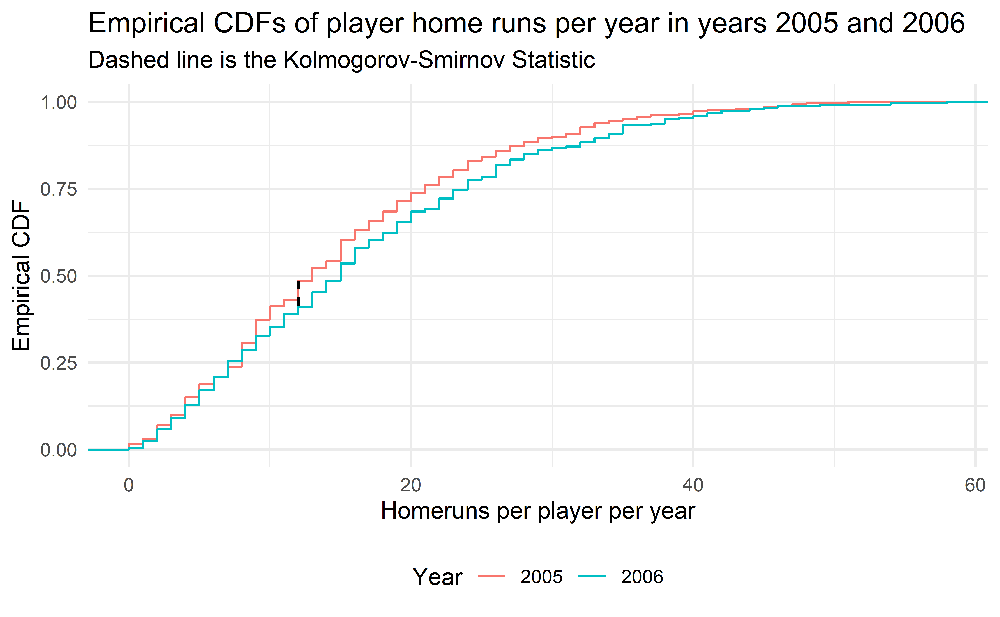
- 2005 and 2006 are similar years in terms of home runs, so the Kolmogorov-Smirnov test does not reject.
Application Exercise: Comparing Distributions
- Go to
ae-06 - Work on exercise 1
12:00
Using the Kolmogorov-Smirnov statistic for visualization
- Our earlier motivation was to compare the distribution of homeruns over time to see if rule changes made a difference.
- We can’t use a ridge or violin plot with all 100 years; it would be too cramped.
- What if we used the KS statistic to compare all pairs of years and emulated a correlation matrix?
Building the Matrix
ks_matrix <- tribble(~year1, ~year2, ~ks_stat, ~p_value)
all_years <- unique(home_runs$yearID)
# Save some memory
home_runs_to_search <- home_runs |> select(yearID, HR)
options(warn = -1) # Turn off ks.test warning
for (year1 in all_years) {
year1HR <- home_runs_to_search |> filter(yearID == year1)
for (year2 in min(all_years):year1) { # Only do half since the test is symmetric
if (year1 == year2) {
next
}
year2HR <- home_runs_to_search |> filter(yearID == year2)
test <- ks.test(
year1HR$HR,
year2HR$HR
)
ks_matrix <- ks_matrix |>
add_row(
year1 = year1,
year2 = year2,
ks_stat = test$statistic,
p_value = test$p.value
)
}
}
ks_matrix <- bind_rows(
ks_matrix,
ks_matrix |> mutate(
tmp_year1 = year1,
year1 = year2,
year2 = tmp_year1
) |> select(-tmp_year1)
)
options(warn = 0)Visualizing the Matrix (p-values)
ks_matrix |>
mutate(signif = cut(
p_value,
breaks = c(0, 0.001, 0.01, 0.05, 0.1, 1.001),
labels = c("<0.001", "<0.01", "<0.05", "<0.1", "<1"),
include.lowest = T,
)) |>
ggplot(aes(
x = year1,
y = year2,
fill = factor(signif)
)) +
geom_tile() +
scale_x_continuous(breaks = 1920 + seq(0, 10) * 10) +
scale_y_continuous(breaks = 1920 + seq(0, 10) * 10) +
scale_fill_manual(values = c(colorspace::heat_hcl(4), "#AAAAAA")) +
labs(
title = "Unadjusted p-values matrix",
fill = "Significance",
x = "Year",
y = "Year"
) +
coord_fixed() +
annotate(
"rect",
xmin = c(2004.5, 2015.5),
ymin = c(2015.5, 2004.5),
xmax = c(2005.5, 2016.5),
ymax = c(2016.5, 2005.5),
color = "#0000FFaa",
alpha = 0,
size = 1
)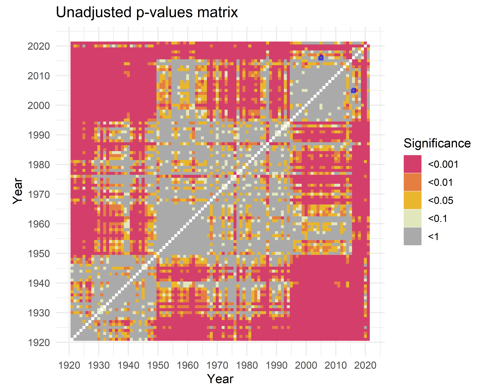
HR2016 <- home_runs |>
filter(yearID == 2016)
ks.test(HR2005$HR, HR2016$HR)
Asymptotic two-sample Kolmogorov-Smirnov test
data: HR2005$HR and HR2016$HR
D = 0.14405, p-value = 0.01089
alternative hypothesis: two-sided- There seems to be some patterns in our matrix, but there’s a problem…
Multiple Testing
- When performing multiple hypothesis tests, we typically want to control the Family Wise Error Rate: the probability we make at least 1 Type I error (a false rejection).
- Newer methods focus more on controlling the False Discovery Rate: the probability that any particular rejected null hypothesis is actually a false positive.
- Both require adjusting p-values which is built in to
R(?p.adjust).holm,hochbergandhommelcontrol for Family Wise Error Ratebonferronialso controls for this, but is very conservative
fdrandBYmethods control for False Discovery Rate
# Let's try all the adjustments and see how they change our visualization
half_matrix <- ks_matrix |>
filter(year1 < year2) |>
mutate(
p_holm = p.adjust(p_value, "holm"),
p_hochberg = p.adjust(p_value, "hochberg"),
p_hommel = p.adjust(p_value, "hommel"),
p_bonferroni = p.adjust(p_value, "bonferroni"),
p_fdr = p.adjust(p_value, "fdr"),
p_BY = p.adjust(p_value, "BY")
)
other_half <- half_matrix |>
mutate(
tmp_year1 = year1,
year1 = year2,
year2 = tmp_year1
) |>
select(-tmp_year1)
ks_matrix <- bind_rows(half_matrix, other_half)Visualizing the Matrix (Corrections)
ks_matrix |>
pivot_longer(
c(
"p_holm",
"p_hochberg",
"p_hommel",
"p_bonferroni",
"p_fdr",
"p_BY"
),
names_to = "adjustment",
values_to = "adjusted_p"
) |>
mutate(signif = cut(
adjusted_p,
breaks = c(0, 0.001, 0.01, 0.05, 0.1, 1.001),
labels = c("<0.001", "<0.01", "<0.05", "<0.1", "<1"),
include.lowest = T,
)) |>
ggplot(aes(
x = year1,
y = year2,
fill = factor(signif)
)) +
geom_tile() +
scale_x_continuous(breaks = 1920 + seq(0, 10) * 10) +
scale_y_continuous(breaks = 1920 + seq(0, 10) * 10) +
scale_fill_manual(values = c(colorspace::heat_hcl(4), "#AAAAAA")) +
labs(
x = "Year",
y = "Year",
fill = "Significance"
) +
facet_wrap(~adjustment) +
coord_fixed() +
theme(
axis.text.x = element_blank(),
axis.ticks.x = element_blank(),
axis.text.y = element_blank(),
axis.ticks.y = element_blank()
)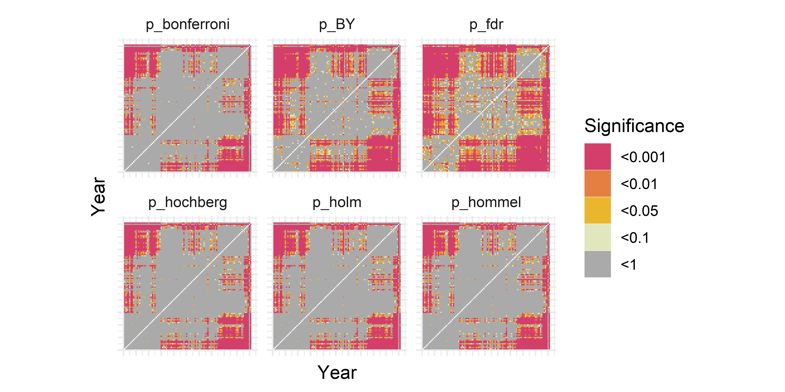
Controlling for the Family Wise Error Rate got rid of a lot of our interesting patterns. We don’t mind some false positives so we choose the BY adjustment as it controls False Discovery Rate but is a bit more conservative than FDR.
Pre-Integration
mat_BY <-
ks_matrix |>
mutate(signif = cut(
p_BY,
breaks = c(0, 0.001, 0.01, 0.05, 0.1, 1.001),
labels = c("<0.001", "<0.01", "<0.05", "<0.1", "<1"),
include.lowest = T,
)) |>
ggplot(aes(x = year1,
y = year2)) +
geom_tile(aes(fill = factor(signif))) +
scale_x_continuous(breaks = 1920 + seq(0, 10) * 10) +
scale_y_continuous(breaks = 1920 + seq(0, 10) * 10) +
scale_fill_manual(values = c(colorspace::heat_hcl(4), "#AAAAAA")) +
labs(title = "BY adjusted p-values matrix",
fill = "Significance",
x = "Year",
y = "Year") +
coord_fixed()
description <- "Major League Baseball was segregated by race until Jackie Robinson broke the color barrier in 1947.The talent level of the league changed rapidly, including the overall distribution of home runs." |>
str_wrap(width=40)
mat_BY +
annotate(
"rect",
xmin = 1920,
ymin = 1920,
xmax = 1947,
ymax = 1947,
color = "#0000FFaa",
alpha = 0
) +
annotate(
"label",
x = 1980,
y = 1980,
label = description,
alpha = 0.9,
size = 3
)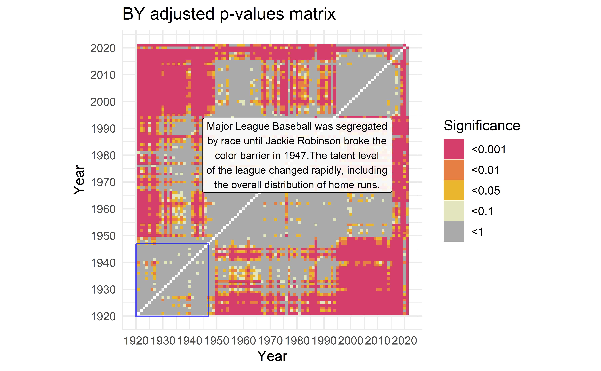
World War II
description <-
"During World War II, many baseball players fought overseas,making for an atypical number of home runs during these years." |>
str_wrap(width=40)
mat_BY +
annotate(
"rect",
xmin = c(1920, 1941),
ymin = c(1941, 1920),
xmax = c(2022, 1945),
ymax = c(1945, 2022),
color = "#0000FFaa",
alpha = 0
) +
annotate(
"label",
x = 1990,
y = 1990,
label = description,
alpha = 0.9,
size = 3
)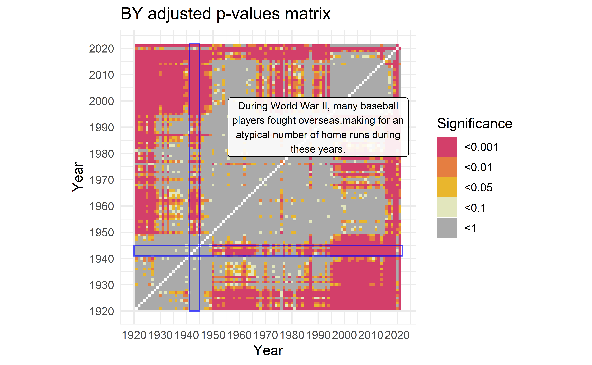
Shortened Seasons
description <-
"In 1994 less homeruns were hit due to the strike-shorted season. Similarly, COVID in 2020 called for a shorter season." |>
str_wrap(width=40)
mat_BY +
annotate(
"rect",
xmin = c(1920, 2019, 1920, 1993),
ymin = c(2019, 1920, 1993, 1920),
xmax = c(2022, 2021, 2022, 1995),
ymax = c(2021, 2022, 1995, 2022),
color = "#0000FFaa",
alpha = 0
) +
annotate(
"label",
x = 1950,
y = 1950,
label = description,
alpha = 0.9,
size = 3
)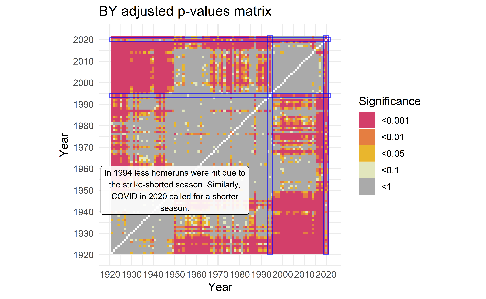
Year of the Pitcher
description <-
"1968 is known as the Year of the Pitcher, when pitchers dominated the league causing less homeruns. The next year, the pitcher's mound was made smaller to give \npitchers a smaller advantage." |>
str_wrap(width = 30)
mat_BY +
annotate(
"rect",
xmin = c(1920, 1967),
ymin = c(1967, 1920),
xmax = c(2022, 1969),
ymax = c(1969, 2022),
color = "#0000FFaa",
alpha = 0
) +
annotate(
"label",
x = 2000,
y = 1950,
label = description,
alpha = 0.9,
size = 3
)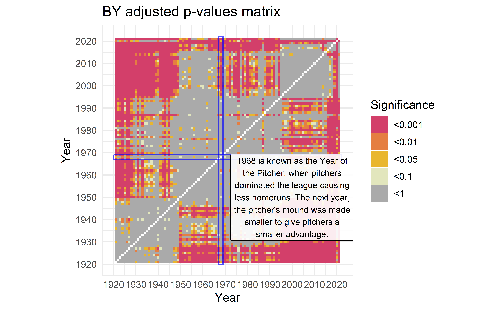
Application exercise: Follow the example
- Go to
ae-06 - Work on exercise 2
12:00
Summary
- The Empirical CDF is a very useful tool in statistics, for both analysis and visualization.
- The Kolmogorov-Smirnov Test is a good way to test if two distributions of values are different.
- However, be careful as it is only an approximate test with discrete values.
- Furthermore, be sure to use multiple testing corrections if testing many different distributions.
- Baseball is interesting! (you may disagree on this one)